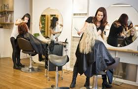

En BEAUTIFUL, creemos que la belleza es una forma de arte. Fundado en [2013], nuestro salón ha sido un refugio para aquellos que buscan realzar su belleza natural. Desde nuestros humildes comienzos, hemos crecido gracias a la pasión y dedicación de nuestro equipo, siempre enfocados en ofrecer un servicio excepcional y personalizado.
En BEAUTIFUL, nuestra misión es proporcionar una experiencia de belleza única y personalizada. Nos esforzamos por crear un ambiente acogedor y relajante donde cada cliente pueda sentirse cómodo y valorado. Creemos en la importancia de la autoexpresión y trabajamos para ayudar a cada persona a encontrar su estilo único.

Calidad: Utilizamos productos de alta calidad y técnicas avanzadas para asegurar resultados excepcionales.
Innovación: Nos mantenemos al día con las últimas tendencias y tecnologías en el mundo de la belleza.
Atención al Cliente: Cada cliente es especial para nosotros, y nos esforzamos por ofrecer un servicio personalizado y atento.
Sostenibilidad: Nos comprometemos a prácticas sostenibles y responsables con el medio ambiente.